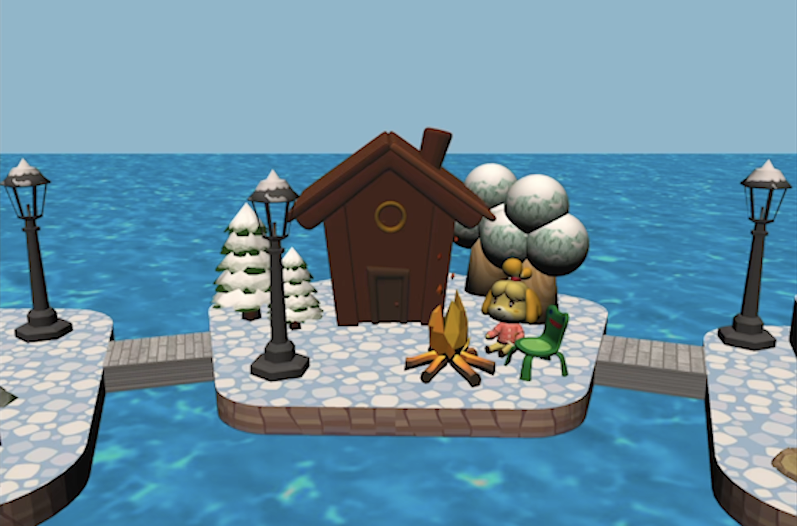
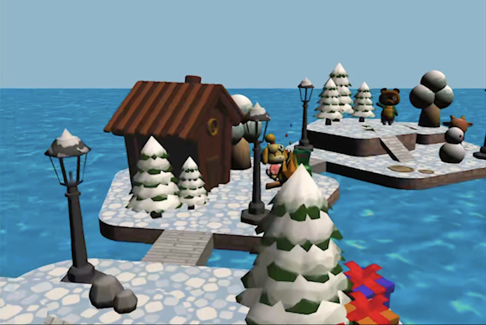
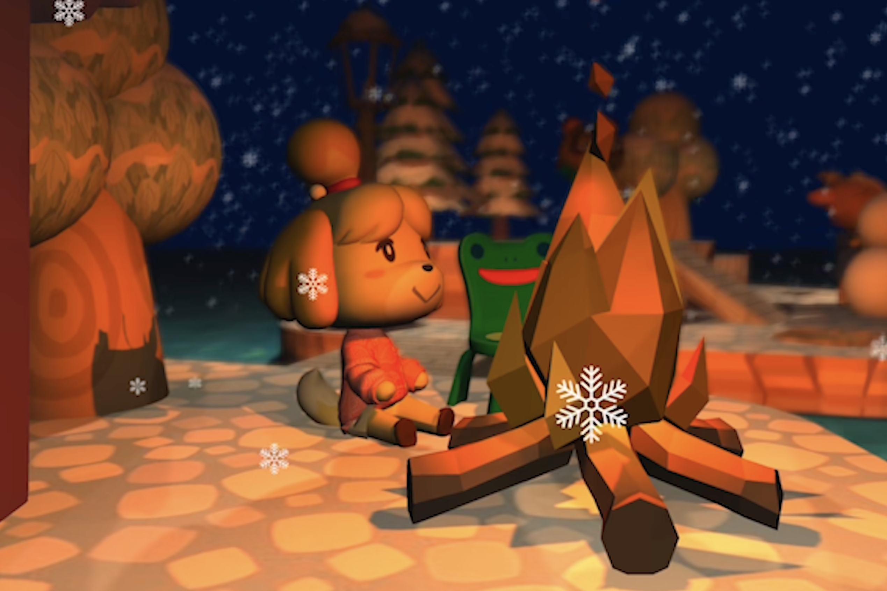

Animal Crossing Rendering is a four-person computer graphics project that recreates the warm, playful look of an Animal Crossing environment in a custom rendering pipeline. The scene combines imported and hand-modeled assets with stylized shading, surface detail, animation, lighting, and post-processing.
The completed renderer brings together a broad range of real-time graphics techniques, including instanced rendering, particle systems, camera paths, depth buffering, depth of field, shadow mapping, real-time soft shadows, color grading, scrolling textures, and a post-processing pipeline.


